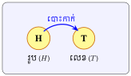
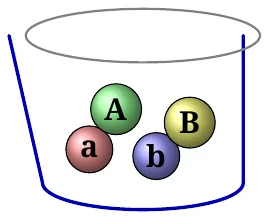
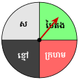

វត្ថុបំណង
- កំណត់ប្រូបាបនៃព្រឹត្តិការណ៍ដែលពិសោធន៍ 1 ដង
- កំណត់ប្រូបាបនៃព្រឹត្តិការណ៍ដែលបានមកពីការពិសោធច្រើនដង ។
1. ប្រូបាបនៃព្រឹត្តិការណ៍ដែលពិសោធន៍ 1 ដង

ឧទាហរណ៍ ៖ គេពិសោធបោះកាក់មួយដែលម្ខាងមានរូប និងម្ខាងទៀតមានលេខ ។ គេសន្មតយកខាងរូបតាងដោយអក្សរ \(\displaystyle H\) និងខាងលេខតាងដោយអក្សរ \(\displaystyle T\) ។
បើគេបោះកាក់នោះ 1 ដង គេអាចបោះបានខាង \(\displaystyle H\) ឬខាង \(\displaystyle T\) ។ លទ្ធផលដែលចេញ \(\displaystyle H\) ឬ \(\displaystyle T\) ជាព្រឹត្តិការណ៍ដែលអាចកើតមាន ។ គេសង្កេតឃើញថាវាមាន 2 ករណីហៅថា ចំនួនករណីអាច ។
បើគេប្រាថ្នាបោះបានខាងរូប \(\displaystyle H\) ដែលជាព្រឹត្តិការណ៍តាមបំណង គេសង្កេតឃើញថាវាមានតែ 1 ករណីហៅថា ចំនួនករណីស្រប ។
ផលធៀបរវាងចំនួនករណីស្របដែលបោះបានខាងរូប \(\displaystyle H\) និងចំនួនករណីអាច ហៅថា ប្រូបាបនៃព្រឹត្តិការណ៍មួយដែលបោះបានខាងរូប \(\displaystyle H\) ។
គេកំណត់ដោយអក្សរ \(\displaystyle P\) :
គេកំណត់សរសេរ \(\displaystyle P = \frac{1}{2}\) ជាចំនួនទសភាគ \(\displaystyle 0.5\) ឬជាភាគរយ \(\displaystyle 50\%\) ប្រូបាបដែលស្មើនឹង \(\displaystyle \frac{1}{2}\) អាចបកស្រាយថាក្នុងការបោះបានខាងរូប \(\displaystyle H\) គេសង្ឃឹម 1 ក្នុងចំណោម 2 ឬសង្ឃឹម \(\displaystyle 50\%\) ។
សម្គាល់ ៖
- គេប្រាកដជាមានសង្ឃឹម \(\displaystyle 100\%\) ក្នុងការបោះកាក់ដើម្បីបាន \(\displaystyle H\) ឬ \(\displaystyle T\) ព្រោះព្រឹត្តិការណ៍ដែលបោះប្រាកដកើតមាន \(\displaystyle H\) ឬ \(\displaystyle T\) ហើយព្រឹត្តិការណ៍ស្របក៏មាន \(\displaystyle H\) ឬ \(\displaystyle T\) នោះ \(\displaystyle P = \frac{2}{2} = 1\) ។
- គ្មានករណីដែលបោះមិនបាន \(\displaystyle H\) ឬ \(\displaystyle T\) ឡើយ ព្រោះការបោះកាក់តែងតែចេញ \(\displaystyle H\) ឬ \(\displaystyle T\) ហើយក្នុងករណីនេះចំនួនករណីស្របស្មើ 0 នោះ \(\displaystyle P = \frac{0}{2} = 0\) ។
- ចំពោះព្រឹត្តិការណ៍ \(\displaystyle A\) មួយ គេបាន \(\displaystyle 0 \le P(A) \le 1\) ។
គេចាប់សន្លឹកប័ណ្ណមួយ ពីសន្លឹកប័ណ្ណដប់ដែលចុះលេខពី \(\displaystyle 1, 2, 3\dots 10\) ។ តើគេមានសង្ឃឹមប៉ុន្មានក្នុងការចាប់យកសន្លឹកប័ណ្ណមានលេខសេសណាមួយ ?
ព្រឹត្តិការណ៍អាច \(\displaystyle \{1, 2, 3, 4, 5, 6, 7, 8, 9, 10\}\) ចំនួនករណីអាចស្មើ 10 និងចំនួនករណីស្រប \(\displaystyle \{1, 3, 5, 7, 9\}\) ចំនួនករណីស្របស្មើ 5 ។
គេបានប្រូបាបដែលចាប់យកសន្លឹកប័ណ្ណមានលេខសេស
គេចាប់ឃ្លីម្តងពីរ ។ រកប្រូបាបដែលចាប់បានអក្សរតូចមួយនិងអក្សរធំមួយ ។

ព្រឹត្តិការណ៍អាច \(\displaystyle \{aA, aB, ab, AB, bA, bB\}\) ចំនួនករណីអាចស្មើ 6 និងចំនួនករណីស្រប \(\displaystyle \{aA, aB, bA, bB\}\) ចំនួនករណីស្របស្មើ 4 ។
គេបានប្រូបាបដែលចាប់បានអក្សរតូចមួយនិងអក្សរធំមួយ ៖
មានន័យថា គេមានសង្ឃឹម 2 ក្នុងចំណោម 3 ឬសង្ឃឹម \(\displaystyle 67\%\) ។
- ក. គេបោះគ្រាប់ឡុកឡាក់មួយ ។ រកប្រូបាបនៃព្រឹត្តិការណ៍បោះបានលេខជាចំនួនបឋម ។
- ខ. ក្នុងការបង្វិលថាសមួយដែលមានលាបពណ៌បៃតង ស ខ្មៅ និងក្រហម (ដូចរូបខាងស្តាំ) ។ រកប្រូបាបដែលឱ្យចុងព្រួញឈប់ចង្អុលនៅត្រង់ពណ៌បៃតង ។

ក. ព្រឹត្តិការណ៍អាច \(\displaystyle \{1, 2, 3, 4, 5, 6\}\) ចំនួនករណីអាចស្មើ 6 និងចំនួនករណីស្រប \(\displaystyle \{2, 3, 5\}\) ចំនួនករណីស្របស្មើ 3 ។ គេបានប្រូបាបនៃព្រឹត្តិការណ៍បោះបានលេខជាចំនួនបឋម ៖
មានន័យថាគេមានសង្ឃឹម 1 ក្នុងចំណោម 2 ឬសង្ឃឹម \(\displaystyle 50\%\) ។
ខ. ព្រឹត្តិការណ៍អាច \(\displaystyle \{\text{ស, បៃតង, ខ្មៅ, ក្រហម}\}\) ចំនួនករណីអាចស្មើ 4 និងចំនួនករណីស្រប \(\displaystyle \{\text{បៃតង}\}\) ចំនួនករណីស្របស្មើ 1 ។
មានន័យថា គេមានសង្ឃឹម 1 ក្នុងចំណោម 4 ឬសង្ឃឹម \(\displaystyle 25\%\) ។
គ្រូបានដាក់ 6 សំណួរគឺ \(\displaystyle A, B, C, D, E\) និង \(\displaystyle F\) ដើម្បីឱ្យសិស្សយកទៅរៀន ។ សិស្សម្នាក់រៀនបានតែ 4 សំណួរប៉ុណ្ណោះ ។ បើគ្រូចេញ 2 សំណួរក្នុងចំណោម 6 សំណួរ ។ តើសិស្សនោះអាចមានសង្ឃឹមប៉ុន្មានភាគរយ ដើម្បីឱ្យការចេញសំណួរត្រូវទាំងពីរ ?
ឧបមាថាសិស្សនោះរៀនតែសំណួរ \(\displaystyle A, B, C, D\) ហើយ \(\displaystyle E, F\) ជាសំណួរដែលពុំដែលរៀន
ព្រឹត្តិការណ៍អាច ៖
\(\displaystyle AB \quad AC \quad AD \quad AE \quad AF\)
\(\displaystyle BC \quad BD \quad BE \quad BF \quad CD\)
\(\displaystyle CE \quad CF \quad DE \quad DF \quad EF\)
ចំនួនករណីអាចស្មើ 15 និងចំនួនករណីស្រប \(\displaystyle \{AB, AC, AD, BC, BD, CD\}\) ចំនួនករណីស្របស្មើ 6 ។ គេបានប្រូបាបចេញ 2 សំណួរត្រូវនឹងសំណួរដែលសិស្សបានរៀន ៖
មានន័យថា សិស្សនោះមានសង្ឃឹមតែ 2 ក្នុងចំណោម 5 ឬសង្ឃឹម \(\displaystyle 40\%\) ។
ក្រុមហ៊ុនមួយមានបុគ្គលិកនារី 2 នាក់និងបុរស 2 នាក់ ។ ជារៀងរាល់ឆ្នាំ ក្រុមហ៊ុននោះតែងឱ្យបុគ្គលិកនោះធ្វើការចាប់ឆ្នោតជ្រើស 2 នាក់ដើម្បីដើរកម្សាន្ត ។ រកប្រូបាបដែលចាប់ឆ្នោតបាននារី 1 នាក់និងបុរស 1 នាក់ ។
មើលចម្លើយ
\(\displaystyle P(A) = \frac{2}{3}\) ។
2. ប្រូបាបនៃព្រឹត្តិការណ៍ដែលធ្វើពិសោធច្រើនដង
បើគេពិសោធបោះកាក់មួយតែមួយដង នោះគេនឹងងាយស្រួលក្នុងការកំណត់ព្រឹត្តិការណ៍ដែលអាចកើតមានឡើងគឺ \(\displaystyle (H, T)\) ។
បើគេចង់ពិសោធលទ្ធផលនៃការបោះកាក់មួយពីរដងនោះគេនឹងលំបាកបន្តិចក្នុងការកំណត់ព្រឹត្តិការណ៍ដែលអាចកើតមានឡើងគឺ \(\displaystyle (HH, HT, TH, TT)\) ។
គេរឹតតែស្មុគស្មាញទៀត នៅពេលដែលគេបោះកាក់មួយនោះ 3 ដង ព្រឹត្តិការណ៍ដែលអាចកើតឡើងគឺ \(\displaystyle (HHH, HHT, HTH, THH, TTH, THT, HTT, TTT)\) ។
ការគណនាប្រូបាបនៃព្រឹត្តិការណ៍ដែលមានការលំបាកនិងស្មុគស្មាញ នៅពេលដែលគេបង្កើនចំនួនដងនៃពិសោធន៍ដូចជា បោះកាក់មួយបីដង បោះគ្រាប់ឡុកឡាក់មួយពីរដងជាដើម ។
គេពិសោធបោះកាក់មួយដោយបោះ 3 ដង ។ តើគេមានសង្ឃឹមប៉ុន្មាន ដើម្បីបោះបានខាងរូបទាំងបីដង ឬខាងលេខទាំងបីដង ?
ព្រឹត្តិការណ៍អាច \(\displaystyle \{HHH, HHT, HTH, THH, TTH, THT, HTT, TTT\}\) ចំនួនករណីអាចស្មើ 8 និងព្រឹត្តិការណ៍ស្រប \(\displaystyle \{HHH, TTT\}\) ចំនួនករណីស្របស្មើ 2 ។
គេបានប្រូបាបនៃព្រឹត្តិការណ៍បោះបានខាងរូបទាំងបីដងឬខាងលេខទាំងបីដង ៖
មានន័យថាគេមានសង្ឃឹម 1 ក្នុងចំណោម 4 ឬសង្ឃឹម \(\displaystyle 25\%\) ។
គេពិសោធបោះគ្រាប់ឡុកឡាក់មួយដោយបោះ 2 ដង ។ តើគេមានសង្ឃឹមប៉ុន្មាន ដើម្បីបោះគ្រាប់ឡុកឡាក់បានលេខដូចគ្នា ?
មើលចម្លើយ
\(\displaystyle P(E) = \frac{1}{6}\)
គូស្វាមីមួយគូមានបំណងយកកូនបីនាក់ ។ គណនាប្រូបាបដែលគូស្វាមីមាន
- ក. ដំបូងកូនស្រី បន្ទាប់កូនប្រុស និងចុងក្រោយកូនស្រី
- ខ. កូនស្រីពីរនិងកូនប្រុសមួយ
- គ. កូនប្រុសទាំងបី
- ឃ. កូនទាំងបីនាក់មានភេទដូចគ្នា
- ង. យ៉ាងតិចកូនប្រុសមួយនាក់ ។
មើលចម្លើយ
ក. \(\displaystyle P(A) = \frac{1}{8}\) ខ. \(\displaystyle P(B) = \frac{3}{8}\) គ. \(\displaystyle P(C) = \frac{1}{8}\) ឃ. \(\displaystyle P(D) = \frac{1}{4}\) ង. \(\displaystyle P(E) = \frac{7}{8}\) ។
លំហាត់
ក្នុងប្រអប់មួយមានស្ករសូកូឡា 24 គ្រាប់ ក្នុងនោះមាន 10 គ្រាប់មានស្នូលក្រែម 6 គ្រាប់គ្មានស្នូល និងនៅសល់មានស្នូលសណ្តែក ។ ស្ករសូកូឡា 1 គ្រាប់ត្រូវជ្រើសរើសដោយចៃដន្យ ។ គណនាប្រូបាបដែលស្ករសូកូឡា ៖
- ក. មានស្នូលក្រែម
- ខ. មានស្នូលសណ្តែក
- គ. មិនមានស្នូលក្រែម ។
មើលដំណោះស្រាយ
ដំណោះស្រាយ
ចំនួនករណីអាចសរុបគឺ \(\displaystyle N = 24\) គ្រាប់ ។- ក.
ស្ករសូកូឡាមានស្នូលក្រែម ៖
ចំនួនករណីស្របគឺ \(\displaystyle 10\) គ្រាប់ ។\[P(\text{ក្រែម}) = \frac{10}{24} = \frac{5}{12} \approx 0.42 = 41.67\%\] - ខ.
ស្ករសូកូឡាមានស្នូលសណ្តែក ៖
ចំនួនស្ករសូកូឡាមានស្នូលសណ្តែកគឺ \(\displaystyle 24 - (10 + 6) = 24 - 16 = 8\) គ្រាប់ ។\[P(\text{សណ្តែក}) = \frac{8}{24} = \frac{1}{3} \approx 0.33 = 33.33\%\] - គ.
ស្ករសូកូឡាមិនមានស្នូលក្រែម ៖
ចំនួនស្ករសូកូឡាមិនមានស្នូលក្រែមគឺ \(\displaystyle 6 + 8 = 14\) គ្រាប់ (គ្មានស្នូល និងស្នូលសណ្តែក) ។\[P(\text{មិនមានស្នូលក្រែម}) = \frac{14}{24} = \frac{7}{12} \approx 0.58 = 58.33\%\]
គេបោះគ្រាប់ឡុកឡាក់មួយ ។ រកប្រូបាបនៃព្រឹត្តិការណ៍ខាងក្រោម ៖
- ក. បោះបានលេខសេស
- ខ. បោះបានលេខធំជាង 3
- គ. បោះបានលេខចែកដាច់នឹង 5
- ឃ. បោះបានលេខធំជាង 1 ។
មើលដំណោះស្រាយ
ដំណោះស្រាយ
លំហសំណាកនៃការបោះគ្រាប់ឡុកឡាក់មួយគឺ \(\displaystyle S = \{1, 2, 3, 4, 5, 6\}\) មានចំនួនករណីអាច \(\displaystyle n(S) = 6\) ។- ក.
បោះបានលេខសេស ៖
ព្រឹត្តិការណ៍ស្របគឺ \(\displaystyle A = \{1, 3, 5\} \implies n(A) = 3\) ។\[P(A) = \frac{3}{6} = \frac{1}{2} = 50\%\] - ខ.
បោះបានលេខធំជាង 3 ៖
ព្រឹត្តិការណ៍ស្របគឺ \(\displaystyle B = \{4, 5, 6\} \implies n(B) = 3\) ។\[P(B) = \frac{3}{6} = \frac{1}{2} = 50\%\] - គ.
បោះបានលេខចែកដាច់នឹង 5 ៖
ព្រឹត្តិការណ៍ស្របគឺ \(\displaystyle C = \{5\} \implies n(C) = 1\) ។\[P(C) = \frac{1}{6} \approx 16.67\%\] - ឃ.
បោះបានលេខធំជាង 1 ៖
ព្រឹត្តិការណ៍ស្របគឺ \(\displaystyle D = \{2, 3, 4, 5, 6\} \implies n(D) = 5\) ។\[P(D) = \frac{5}{6} \approx 83.33\%\]
រដ្ឋាមានស្រោមជើងពណ៌ផ្ទៃមេឃចំនួន 8 ពណ៌ខៀវចំនួន 7 ពណ៌សូកូឡាចំនួន 13 និងពណ៌ក្រហមចំនួន 6 ។ រដ្ឋាជ្រើសរើសស្រោមជើងមួយដោយចៃដន្យ ។ គណនាប្រូបាបដែលស្រោមជើងមាន ៖
- ក. ពណ៌ផ្ទៃមេឃ
- ខ. ពណ៌ខៀវ
- គ. មិនមែនពណ៌សូកូឡា
- ឃ. មិនមែនពណ៌សូកូឡាឬពណ៌ក្រហម
- ង. ពណ៌ផ្ទៃមេឃឬពណ៌ខៀវ ។
មើលដំណោះស្រាយ
ដំណោះស្រាយ
ចំនួនស្រោមជើងសរុបគឺ \(\displaystyle N = 8 + 7 + 13 + 6 = 34\) ស្រោម ។- ក.
ពណ៌ផ្ទៃមេឃ ៖
\[P(\text{ផ្ទៃមេឃ}) = \frac{8}{34} = \frac{4}{17} \approx 0.235 = 23.53\%\] - ខ.
ពណ៌ខៀវ ៖
\[P(\text{ខៀវ}) = \frac{7}{34} \approx 0.206 = 20.59\%\] - គ.
មិនមែនពណ៌សូកូឡា ៖
ចំនួនស្រោមជើងមិនមែនសូកូឡាគឺ \(\displaystyle 34 - 13 = 21\) ស្រោម ។\[P(\text{មិនមែនសូកូឡា}) = \frac{21}{34} \approx 0.618 = 61.76\%\] - ឃ.
មិនមែនពណ៌សូកូឡាឬពណ៌ក្រហម ៖
ស្រោមជើងដែលមិនមែនសូកូឡា ហើយក៏មិនមែនក្រហម គឺស្រោមជើងពណ៌ផ្ទៃមេឃ និងខៀវ ៖ \(\displaystyle 8 + 7 = 15\) ស្រោម ។\[P = \frac{15}{34} \approx 0.441 = 44.12\%\] - ង.
ពណ៌ផ្ទៃមេឃឬពណ៌ខៀវ ៖
ចំនួនករណីស្របគឺ \(\displaystyle 8 + 7 = 15\) ស្រោម ។\[P = \frac{15}{34} \approx 0.441 = 44.12\%\]
ធីតានិងរដ្ឋានៅក្នុងថ្នាក់ដែលមានសិស្សស្រី 14 នាក់និងសិស្សប្រុស 10 នាក់ ។ សិស្សម្នាក់ត្រូវបានជ្រើសរើសជាប្រធានថ្នាក់ដោយចៃដន្យពីសិស្សក្នុងថ្នាក់ ។
- ក. គណនាប្រូបាបដែលប្រធានថ្នាក់ជាសិស្សស្រី
- ខ. គណនាប្រូបាបដែលប្រធានថ្នាក់ជាសិស្សប្រុស
- គ. គណនាប្រូបាបដែលប្រធានថ្នាក់ជារដ្ឋា
- ឃ. គណនាប្រូបាបដែលប្រធានថ្នាក់ជាធីតាឬរដ្ឋា
- ង. គណនាប្រូបាបដែលប្រធានថ្នាក់មិនមែនជាធីតា រដ្ឋា ។
មើលដំណោះស្រាយ
ដំណោះស្រាយ
ចំនួនសិស្សសរុបក្នុងថ្នាក់ \(\displaystyle N = 14 + 10 = 24\) នាក់ ។- ក.
ប្រធានថ្នាក់ជាសិស្សស្រី ៖
\[P(\text{ស្រី}) = \frac{14}{24} = \frac{7}{12} \approx 0.583 = 58.33\%\] - ខ.
ប្រធានថ្នាក់ជាសិស្សប្រុស ៖
\[P(\text{ប្រុស}) = \frac{10}{24} = \frac{5}{12} \approx 0.417 = 41.67\%\] - គ.
ប្រធានថ្នាក់ជារដ្ឋា ៖
រដ្ឋាជាសិស្សម្នាក់ក្នុងចំណោមសិស្ស 24 នាក់ ៖\[P(\text{រដ្ឋា}) = \frac{1}{24} \approx 0.042 = 4.17\%\] - ឃ.
ប្រធានថ្នាក់ជាធីតាឬរដ្ឋា ៖
មាន 2 ករណីស្រប គឺធីតា ឬរដ្ឋា ៖\[P(\text{ធីតា ឬ រដ្ឋា}) = \frac{2}{24} = \frac{1}{12} \approx 0.083 = 8.33\%\] - ង.
ប្រធានថ្នាក់មិនមែនជាធីតា រដ្ឋា ៖
ចំនួនករណីស្របគឺ \(\displaystyle 24 - 2 = 22\) នាក់ ៖\[P = \frac{22}{24} = \frac{11}{12} \approx 0.917 = 91.67\%\]
នៅពេលដែលគេបោះគ្រាប់ឡុកឡាក់បីព្រមគ្នា ។ រកប្រូបាបនៅពេលដែលគ្រាប់ឡុកឡាក់ទាំងបីចេញលេខដូចគ្នា ។
មើលដំណោះស្រាយ
ដំណោះស្រាយ
ចំនួនករណីអាចនៃការបោះគ្រាប់ឡុកឡាក់ 3 គ្រាប់ព្រមគ្នា ៖\[N = 6 \times 6 \times 6 = 216\]ព្រឹត្តិការណ៍ដែលគ្រាប់ឡុកឡាក់ទាំងបីចេញលេខដូចគ្នាគឺ ៖
\[E = \{(1,1,1), (2,2,2), (3,3,3), (4,4,4), (5,5,5), (6,6,6)\}\]ចំនួនករណីស្របគឺ \(\displaystyle n(E) = 6\) ។
គេបានប្រូបាប ៖\[P(E) = \frac{6}{216} = \frac{1}{36} \approx 0.0278 = 2.78\%\]នៅពេលដែលគេបោះគ្រាប់ឡុកឡាក់ពីរគ្រាប់ ។
- ក. រកប្រូបាបនៅពេលដែលផលបូកមុខលើនៃគ្រាប់ឡុកឡាក់ទាំងពីរស្មើនឹង 5 ។
- ខ. រកប្រូបាបនៅពេលដែលផលបូកមុខលើនៃគ្រាប់ឡុកឡាក់ទាំងពីរធំជាង ឬស្មើនឹង 9 ។
មើលដំណោះស្រាយ
ដំណោះស្រាយ
ចំនួនករណីអាចនៃការបោះគ្រាប់ឡុកឡាក់ 2 គ្រាប់ ៖ \(\displaystyle N = 6 \times 6 = 36\) ។- ក.
ផលបូកស្មើនឹង 5 ៖
គូលេខដែលផលបូកស្មើ 5 គឺ ៖\[A = \{(1, 4), (2, 3), (3, 2), (4, 1)\} \implies n(A) = 4\]\[P(A) = \frac{4}{36} = \frac{1}{9} \approx 0.111 = 11.11\%\] - ខ.
ផលបូកធំជាងឬស្មើនឹង 9 (\(\displaystyle \ge 9\)) ៖
- ផលបូកស្មើ 9 ៖ \(\displaystyle \{(3, 6), (4, 5), (5, 4), (6, 3)\}\) (4 ករណី)
- ផលបូកស្មើ 10 ៖ \(\displaystyle \{(4, 6), (5, 5), (6, 4)\}\) (3 ករណី)
- ផលបូកស្មើ 11 ៖ \(\displaystyle \{(5, 6), (6, 5)\}\) (2 ករណី)
- ផលបូកស្មើ 12 ៖ \(\displaystyle \{(6, 6)\}\) (1 ករណី)
ចំនួនករណីស្របសរុបគឺ \(\displaystyle n(B) = 4 + 3 + 2 + 1 = 10\) ករណី ។
\[P(B) = \frac{10}{36} = \frac{5}{18} \approx 0.278 = 27.78\%\]
កាក់មួយនិងគ្រាប់ឡុកឡាក់មួយបោះឡើងព្រមគ្នា ។
- ក. គណនាចំនួនករណីអាច
- ខ. គណនាប្រូបាបនៃព្រឹត្តិការណ៍បោះកាក់បានខាងរូបនិងបោះគ្រាប់ឡុកឡាក់បានលេខ 6 ។
មើលដំណោះស្រាយ
ដំណោះស្រាយ
- ក.
ចំនួនករណីអាច ៖
កាក់មាន 2 ករណី \(\displaystyle \{H, T\}\) ហើយគ្រាប់ឡុកឡាក់មាន 6 ករណី \(\displaystyle \{1, 2, 3, 4, 5, 6\}\) ។
ចំនួនករណីអាចសរុបគឺ ៖\[N = 2 \times 6 = 12\text{ ករណី}\]លំហសំណាក ៖
\[S = \{(H,1), (H,2), (H,3), (H,4), (H,5), (H,6), (T,1), (T,2), (T,3), (T,4), (T,5), (T,6)\}\] - ខ.
ប្រូបាបបោះបានកាក់ខាងរូប និងគ្រាប់ឡុកឡាក់លេខ 6 ៖
ព្រឹត្តិការណ៍ស្របមានតែ 1 ករណីគត់គឺ \(\displaystyle (H, 6)\) ។\[P = \frac{1}{12} \approx 0.083 = 8.33\%\]
គេបោះកាក់មួយចំនួនបីដង ។
- ក. គណនាចំនួនករណីអាច
- ខ. គណនាប្រូបាបនៃព្រឹត្តិការណ៍បោះកាក់បានខាងរូបពីរនិងខាងលេខមួយ ។
មើលដំណោះស្រាយ
ដំណោះស្រាយ
- ក.
ចំនួនករណីអាច ៖
ការបោះកាក់ 3 ដង មានចំនួនករណីអាច ៖\[N = 2^3 = 8\text{ ករណី}\]លំហសំណាក ៖
\[S = \{HHH, HHT, HTH, THH, HTT, THT, TTH, TTT\}\] - ខ.
ប្រូបាបបោះបានខាងរូបពីរ និងខាងលេខមួយ ៖
ព្រឹត្តិការណ៍ស្របគឺបោះបាន \(\displaystyle 2H\) និង \(\displaystyle 1T\) ៖\[E = \{HHT, HTH, THH\} \implies n(E) = 3\]\[P(E) = \frac{3}{8} = 0.375 = 37.5\%\]
ឃ្លីមួយគ្រាប់បានហូតចេញពីថង់ដោយចៃដន្យដែលមានឃ្លីពណ៌ក្រហម 1 គ្រាប់ ពណ៌លឿង 6 គ្រាប់ ពណ៌ស្វាយ 4 គ្រាប់ ពណ៌ខៀវ 5 គ្រាប់ ។ រកប្រូបាបនៃការហូតយក ៖
- ក. ជាពណ៌ស្វាយ
- ខ. ជាពណ៌ក្រហមឬពណ៌ខៀវ
- គ. ជាពណ៌ស
- ឃ. ជាពណ៌មិនមែនស ។
មើលដំណោះស្រាយ
ដំណោះស្រាយ
ចំនួនឃ្លីសរុបក្នុងថង់គឺ \(\displaystyle N = 1 + 6 + 4 + 5 = 16\) គ្រាប់ ។- ក.
ហូតបានពណ៌ស្វាយ ៖
មានឃ្លីពណ៌ស្វាយ 4 គ្រាប់ ៖\[P(\text{ស្វាយ}) = \frac{4}{16} = \frac{1}{4} = 0.25 = 25\%\] - ខ.
ហូតបានពណ៌ក្រហមឬពណ៌ខៀវ ៖
ចំនួនករណីស្របគឺ \(\displaystyle 1 + 5 = 6\) គ្រាប់ ៖\[P(\text{ក្រហម ឬ ខៀវ}) = \frac{6}{16} = \frac{3}{8} = 0.375 = 37.5\%\] - គ.
ហូតបានពណ៌ស ៖
ក្នុងថង់គ្មានឃ្លីពណ៌សទេ នោះចំនួនករណីស្របស្មើ 0 ៖\[P(\text{ស}) = \frac{0}{16} = 0 = 0\% \quad \text{(ព្រឹត្តិការណ៍មិនអាចកើតមាន)}\] - ឃ.
ហូតបានពណ៌មិនមែនស ៖
ឃ្លីទាំង 16 គ្រាប់សុទ្ធតែមិនមែនពណ៌ស នោះចំនួនករណីស្របស្មើ 16 ៖\[P(\text{មិនមែនស}) = \frac{16}{16} = 1 = 100\% \quad \text{(ព្រឹត្តិការណ៍ប្រាកដ)}\]
ក្នុងប្រអប់មួយមានបាល់ 24 ដែលមានខ្លះជាពណ៌ក្រហម និងខ្លះជាពណ៌បៃតង និងនៅសល់ជាពណ៌ខៀវ ។ ប្រូបាបនៃការហូតបាល់ពណ៌ក្រហមនិងពណ៌បៃតងដោយចៃដន្យគឺ \(\displaystyle \frac{1}{3}\) និង \(\displaystyle \frac{1}{6}\) រៀងគ្នា ។ រកប្រូបាបនៃការហូតយកបាល់ពណ៌ខៀវនៅក្នុងថង់ ។
មើលដំណោះស្រាយ
ដំណោះស្រាយ
វិធីទី 1 ៖ គណនាតាមលក្ខណៈប្រូបាបបំពេញ
ដោយបាល់ក្នុងប្រអប់មានតែបីពណ៌គឺ ក្រហម បៃតង និងខៀវ នោះផលបូកប្រូបាបនៃព្រឹត្តិការណ៍ទាំងបីស្មើនឹង 1 ៖\[P(\text{ក្រហម}) + P(\text{បៃតង}) + P(\text{ខៀវ}) = 1\]\[\frac{1}{3} + \frac{1}{6} + P(\text{ខៀវ}) = 1\]\[\left(\frac{2}{6} + \frac{1}{6}\right) + P(\text{ខៀវ}) = 1\]\[\frac{3}{6} + P(\text{ខៀវ}) = 1 \iff \frac{1}{2} + P(\text{ខៀវ}) = 1\]\[P(\text{ខៀវ}) = 1 - \frac{1}{2} = \frac{1}{2} = 50\%\]វិធីទី 2 ៖ គណនាតាមចំនួនបាល់
- ចំនួនបាល់ពណ៌ក្រហម ៖ \(\displaystyle 24 \times \frac{1}{3} = 8\) គ្រាប់
- ចំនួនបាល់ពណ៌បៃតង ៖ \(\displaystyle 24 \times \frac{1}{6} = 4\) គ្រាប់
- ចំនួនបាល់ពណ៌ខៀវ ៖ \(\displaystyle 24 - (8 + 4) = 24 - 12 = 12\) គ្រាប់
ប្រូបាបហូតបានបាល់ពណ៌ខៀវគឺ ៖
\[P(\text{ខៀវ}) = \frac{12}{24} = \frac{1}{2} = 50\%\]
ខ្លឹមសារ៖ សៀវភៅពុម្ពគណិតវិទ្យាថ្នាក់ទី៨ របស់ក្រសួងអប់រំ យុវជន និងកីឡា · វាយអត្ថបទ គូររូបភាពឡើងវិញ និងរៀបចំលើអនឡាញដោយលោកគ្រូ សាន សុខលី សម្រាប់ការសិក្សាដោយឥតគិតថ្លៃ និងមិនរកប្រាក់ចំណេញ។ មិនមែនជាការបោះពុម្ពផ្លូវការរបស់ក្រសួងទេ។